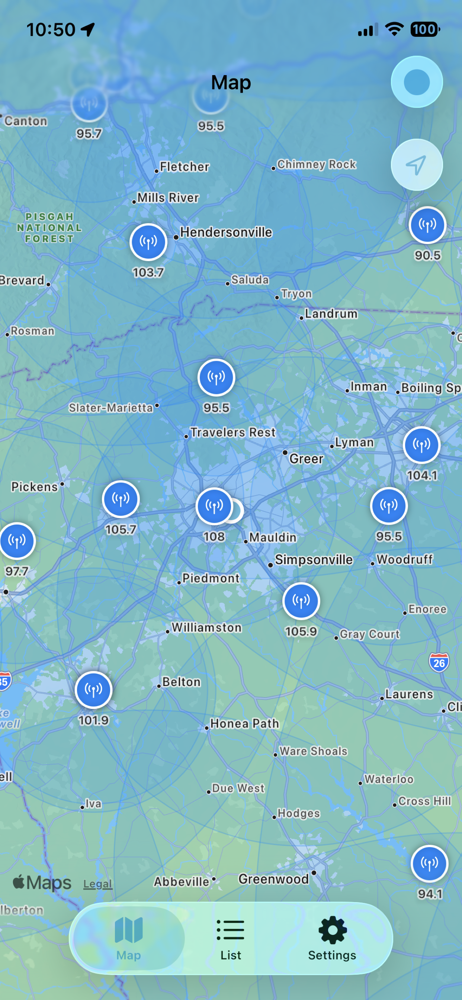
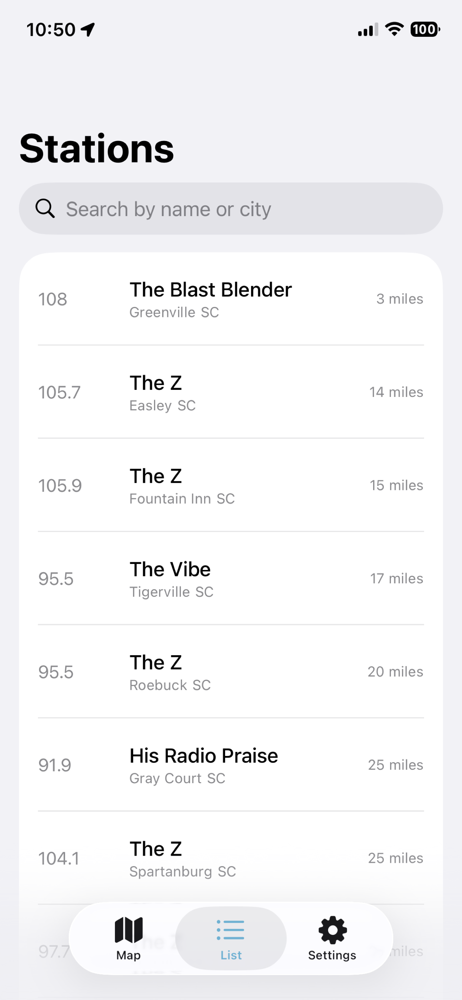
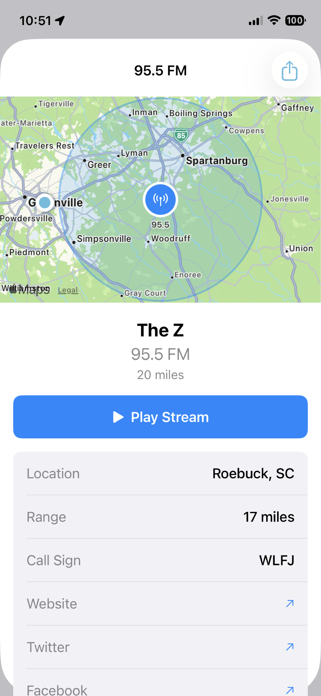

Nearby Discovery
Find Christian stations near your current location with a customizable radius.
Christian Radio Finder (Christian FM) helps you discover, browse, and stream local Christian stations by map or list. Stay encouraged with uplifting content at home, at work, or on the road.
Discover stations by your current GPS location, search quickly, and stream directly in the app.
Find Christian stations near your current location with a customizable radius.
See stations plotted on a map with approximate distance from your location.
Search by call sign, city, or frequency and jump to the station you want.
Listen instantly with background audio support while using other apps.
View frequency, call sign, city, and station range before tuning in.
Start at 50 miles and expand in 5-mile increments for broader discovery.
Refresh station data quickly to keep your options current and relevant.
Hide stations you don't want to see and keep your browsing list clean.
Browse nearby stations on the map, search by name or city, and view detailed station information.



Unlock extra convenience features designed for regular listeners and families on the go.
$0.99
Product ID: crlapppro
Type: One-time in-app purchase (not a subscription)
Restore: Available for previous Pro buyers
Your privacy matters. Christian Radio Finder is designed to keep your listening personal and secure.
Yes, location access while using the app is required for nearby station lookup.
Absolutely. The core station discovery and streaming experience is free.
No. Pro is a one-time purchase, currently priced at $0.99 (region pricing may vary).
Yes, Christian Radio Finder supports all device orientations on iPhone and iPad.
Real reviews from App Store users who love Christian Radio Finder.
"This is truly a one of a kind app. I use it all the time when I travel for work to find local Christian radios stations. I find it to be quite accurate wherever I go. Thanks so much for creating this app."
"Love it! I, too, wear out my scan button looking for a radio station when I travel. Now that I have an iPhone and this genius app, my cross country trips will be so much better."
"LOVE this app, no more wasting time scanning for Christian radio stations one station at a time over & over while you travel anymore. GENIUS!! Such a blessing"
"I was just looking for a general radio station finder to find Christian stations hoping I could find one for iphone 5. Then in my search I find this app that just happens to be made specifically for Christian stations!"
Built by Tim Hibbard.
"Supporting this app allows me to continue development and add new features. I use the proceeds to pay for marketing, hosting and other development costs. I have not had enough of a surplus to donate, but I would like to should this app generate a significant amount of revenue."
545689326